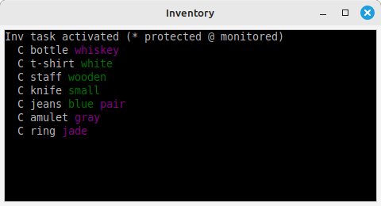

This is the third of a four-part tutorial, showing you how Axmud's pre-configured worlds were created. In this part we'll discuss the Inventory and Condition tasks, which between them try to keep track of your character's inventory.
For most players, this is not really necessary. However, if you are writing scripts that need to know, this section will describe how to capture that information. In addition, Axmud commands like ;sellall depend on the Inventory task.
Assuming that the current dictionary has been configured correctly, Axmud can easily parse items like A big shiny metal sword, recognising that it's the same kind of a thing as A sword.
Once again, you must be familiar with regular expressions/regexes/patterns (we use these terms interchangeably). Section 6 of the Axmud Guide tells you everything you need to know, so read that first, if necessary.
The Inventory task, when running, sends one or more commands to the world. One of them is usually i, short for inventory, which produces a response like this:
You are carrying the following items:
A bottle of whiskey
A white t-shirt
A wooden staff
A small knife
A pair of blue jeans
A gray amulet
A jade ring
The Inventory task tries to interpret this list. The interpreted data is available to your scripts, but most users will be content with viewing it in the task's window.

In this window, the main word (bottle, knife and so on) is displayed in white. Other words (white, wooden) which the Axmud dictionary recognises are in green, and unrecognised words in purple. (Click Edit > Edit dictionary... to update the dictionary, if it's worth the effort.)
The initial letter shows how the character is using each item. In the image above, the C character shows that everything is being carried.
In addition, you might be able to see
You can change the commands that are sent, when the Inventory task is running.
You can enable or disable sending those commands.
;activateinventory
;aiv
;disactivateinventory
;div
You can apply a single action to everything in your inventory. For example, at a shop you can type ;sellall to sell everything.
Of course, some things are too valuable to be sold, so you can protect them. Protected items are ignored by commands such as ;sellall.
The ;protectobject command is quite sophisticated, and can be used to protect a single object or several of them (for example, all sharp knives). In this case, we'll just mark the sword as protected. (If your character has multiple swords, they will all be protected.)
;protectobject sword
;prt sword
Protection also applies when using ;dropall and ;useall.
;dropall
;dall
;useall put @ in chest
;uall put @ in chest
Since most swords will start to wear out after a while, it might be useful to monitor its condition. The Condition task does that, sending a command such as examine sword and trying to capture a response like Your sword is in excellent condition or Your sword is falling apart!
The command is only sent when the Inventory task is running, and has been activated, as described above.
You can choose which items are important enough to be monitored. The ;monitorobject command works much like the ;protectobject command.
;monitorobject sword
;mno sword
Information about your monitored objects is not displayed in the Inventory task's window, but it is available to your scripts.
Different worlds display a character's inventory in many different ways. For example, the list might start with the text You are carrying, and end with the first empty line.
You are carrying:
A shiny sword
A dusty map
4 gold coins
Axmud can interpret inventory lists in this format, and in several others.
Your first task, then, is to decide which format best matches the world's output.
In the example just above, you would select the third option, start_empty.
Now click on the Page 2 tab, and add some patterns.
If you selected start_stop, you must add at least two patterns: one matching the first line, and another matching the last line. The lines in between don't need to match a specific pattern; the Inventory task simply interprets a line like A big sword as best it can.
^You are carrying
^You hands are almost full!
If you selected start_empty, you must add at least one pattern matching the first line.
^You are carrying
Once again, the Inventory task interprets the subsequent lines, such as A dusty map, as best it can, stopping only at the first empty line.
If you selected match_all, you must add patterns for every possible line.
^You are wielding (.*)
^You are holding (.*)
^You are carrying (.*)
One of these patterns must be marked as either a 'start' or 'stop' pattern; the Inventory task will then know when to empty its list, ready for the next bunch of items.
Adding patterns is quite simple. First ask yourself, does this line actually contain an item like a sword or a knife, or is it a line like You are carrying the following items ?
If the line contains an item like a sword or a knife, then do this:
If the line doesn't contain an item, do this:
When you're finished, click the OK button to apply your changes, and then reset the task with ;resettask inventory.
When adding patterns, the Type box has a number of possible values. We've already covered wield, hold, wear, carry and sack.
The types purse, deposit, deposit_only, withdraw, withdraw_only and balance update your character's wealth, as stored in the character profile (and frequently visible in the Status task). You can use the special types empty_purse and empty_bank to represent no money at all.
misc can be used for any kind of possession that doesn't fall into one of the categories above.
The remaining tabs should be self-explanatory; for example, to configure the Condition task: